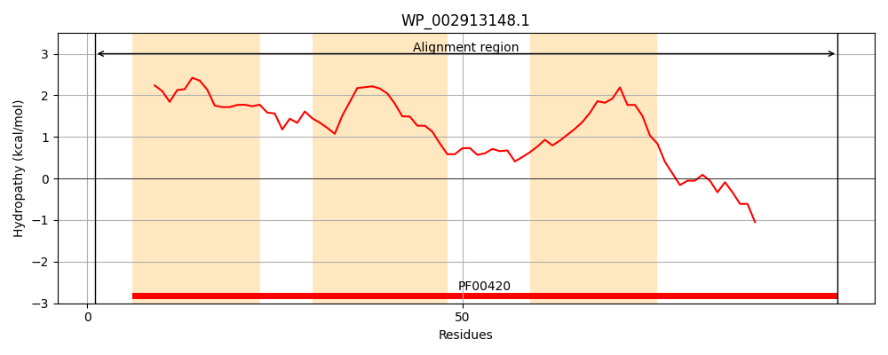
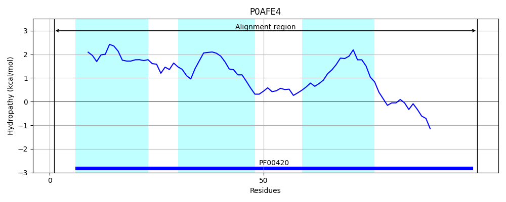
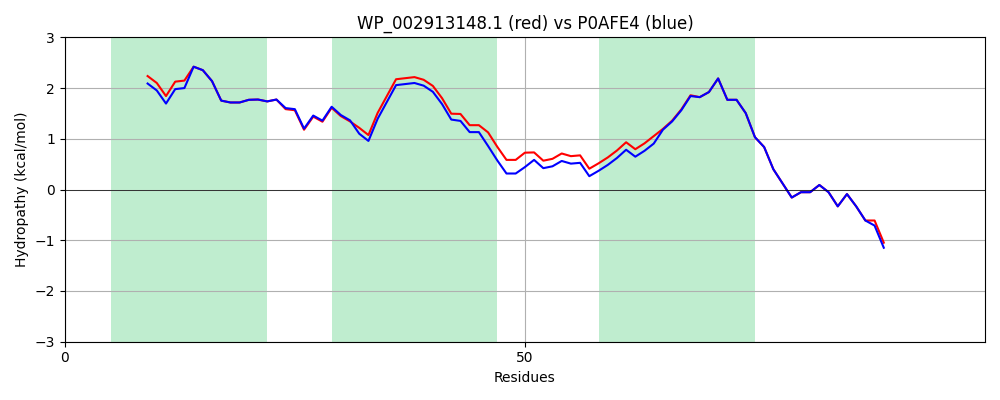

Hit Accession: P0AFE4
Hit TCID: 3.D.1.1.1
Hit Description: gnl|BL_ORD_ID|8818 gnl|TC-DB|P0AFE4|3.D.1.1.1 NADH-quinone oxidoreductase subunit K - Escherichia coli.
Mach Len: 100
e:0.000000
Query TMS Count : 3
Hit TMS Count: 3
TMS-Overlap Score: 2.750000
Predicted Substrates:CHEBI:5584;hydron
BLAST Alignment:
| Protein Hydropathy Plots: | |
|---|---|
|  |  |
Pairwise Alignment-Hydropathy Plot: | |
|  | |